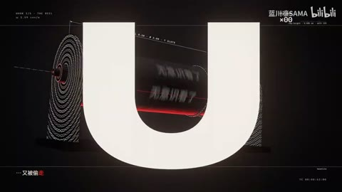

← 案例图谱AI08 / 主要视觉研究样本
〖4K60〗饭卡《OverThink》MV by Opus5.5
蓝川凛SAMA · 79播放快照 · <10万 · B站原作 ↗
红黑米白贯穿递归框、酒杯、胶片字阵、叶片标本和机械字筒；每场主体不同但视觉语汇统一，有留白和明暗段落。

约52.033秒 · 案例代表帧从画面里找依据
这一例先看什么
红黑米白贯穿递归框、酒杯、胶片字阵、叶片标本和机械字筒；每场主体不同但视觉语汇统一，有留白和明暗段落。
审美判断
主歌词、STOP、REPLAY、TIME FLIES及说明卡标题有清楚的大字号层级；技术小标签与背景编码更像装饰层，不能要求观众逐字读完。
迁移到自己的题材
产品功能解释、推理线索、人物关系、搜索与等待、制度压力、人与机器的关系。
教学提问：此刻观众必须读懂哪一条信息？如果所有界面都在动，谁仍然是主角？
带画面的分析单元
图像标出取样时间，对应观察中的关键状态。单帧不能独立证明运动，连续性请结合摘录。表达作用与应用场景是教学解读，复现路线是建议，不是原作者工程还原。
分析单元 01 / 4—24秒
递归圆角框／时间波形／线框酒杯／星场排字
实际观察
红黑空间圆角矩形层层错开，秒表与波形同框，弯曲星场网格和线框酒杯配竖字。
表达作用（教学解读）
用少量形状、方向和重复建立性格，让图形与人物一起表达轻盈、秩序或紧张。
具体应用场景
青春、角色介绍、音乐视觉、活动包装、清楚的图形风格。
复现建议（非原作者工程还原）
矩形副本偏移、程序波形与数字时钟、参数化酒杯网格和粒子球面、路径文字。
直出判断：基本机制可做，完整透视和视觉密度需调试
常见误用：形状种类与颜色都无限增加；图形仅为填空；不顾人物视线与轮廓。
分析单元 02 / 28—48秒
胶片条字阵／圆形放大镜／线描植物标本／档案卡
实际观察
汉字逐格排入胶片条，圆镜放大局部；叶片以密线条构成，背景为标本标签和纸卡。
表达作用（教学解读）
把画面变成可触摸的记忆或记录；纸边、阴影与展示顺序可以表现珍惜、拼凑或碎裂。
具体应用场景
回忆、青春、艺术创作、旅行手记、人物档案、纪念短片。
复现建议（非原作者工程还原）
胶片贴图、逐格文本、放大区域圆形蒙版、贝塞尔叶脉和档案卡排版。
直出判断：基础版容易，叶片精细线条需程序或素材设计
常见误用：所有纸张纹理一样重；阴影方向不一致；折页遮挡错误；照片墙只有数量而没有观看顺序。
分析单元 03 / 50.1—52.1秒
逐字红色高亮／曝光脉冲／卡片切圆柱字筒
实际观察
同一档案卡上文本逐字增加并依次变红，画面亮暗波动；51.833秒切到黑底圆柱，52.033秒大号字母进入前景。
表达作用（教学解读）
把阅读顺序变成观看顺序；用字重、位置与停留表达强调、犹豫或压迫。
具体应用场景
观点短片、歌词视觉、人物宣言、章节、情绪高潮；先决定哪些词必须读懂，哪些只是纹理。
复现建议（非原作者工程还原）
逐字时间表、红黑填充切换、轻微曝光变化，切至圆柱文字贴图的空间镜头。
直出判断：逐字字效容易；圆柱空间需实现与调试
常见误用：每个字都弹跳、整句停留不足、所有文字同时争主位。严肃叙事里无理由的回弹会削弱重量。
分析单元 04 / 56—88秒
数字滚筒／线框球／须知信息板／翻页式文字
实际观察
文本和数字贴在转筒上，旁有线框球与红字，随后信息告示板、胶片钟表和翻页显示牌交替。
表达作用（教学解读）
把阅读顺序变成观看顺序；用字重、位置与停留表达强调、犹豫或压迫。
具体应用场景
观点短片、歌词视觉、人物宣言、章节、情绪高潮；先决定哪些词必须读懂，哪些只是纹理。
复现建议（非原作者工程还原）
圆柱UV贴图与旋转，数字按位滚动，线框球、图标、翻页遮罩和时钟指针。
直出判断：可程序化，基础2D翻牌容易，整套3D需要调试
常见误用：每个字都弹跳、整句停留不足、所有文字同时争主位。严肃叙事里无理由的回弹会削弱重量。
分析单元 05 / 96—128秒
粒子字溶解／空间门框／石刻字／等高线与表盘
实际观察
字形散成粒子，门框叠线配文字，石碑浮雕字，连续曲线地形与指针式表盘。
表达作用（教学解读）
用运动方向、尺度和密度建立空气、空间或情绪；装饰层应服务焦点。
具体应用场景
回忆、季节、梦幻、寒冷、散场、能量爆发、文本聚散。
复现建议（非原作者工程还原）
字形采样粒子插值、线框透视、文字高度或凹凸贴图、曲线族和旋转指针。
直出判断：基础机制可做；石材质和复杂连续曲线有调试量
常见误用：平均铺满；近远粒子大小与模糊无差别；粒子挡脸；用程序火星冒充纪实拍摄。
分析单元 06 / 142.5—144.5秒
三联滚筒／推拉重构图／红白黑主题闪换
实际观察
三只滚筒持续转字与数字；142.833秒附近推进为单筒特写，143.3秒拉回三筒，144.1秒再次推进。多次红白反转伴随同一几何场景。
表达作用（教学解读）
利用相邻镜头改变理解，使原来无关的画面形成主题、对比或关系。
具体应用场景
纪念、广告、人物关系重组、旅行随笔、社会观点、品牌回顾。
复现建议（非原作者工程还原）
相机距离或2D透视缩放、连续圆柱旋转、主题色关键帧；数字滚动独立于相机。
直出判断：基础版可程序直出，准确运动模糊与空间调度需调试
常见误用：素材只因好看而排列；上下文失真；借剪接制造未经支持的事实判断。
分析单元 07 / 160—176秒
点阵人物／滚筒回收／快门光圈圆环
实际观察
人脸变为密集字符点阵，尾段回到圆柱与快门样同心曲线。
表达作用（教学解读）
把可控规则变成可见变化；通过不变量、比例和相位建立秩序或空间。
具体应用场景
概念解释、音乐可视化、抽象世界、图表、程序艺术。
复现建议（非原作者工程还原）
图像亮度映射为字符或点阵，参数曲线构造光圈与圆形文字。
直出判断：规则点阵与圆形字效容易；人物来源需另核
常见误用：符号无含义；空间复杂度替代概念清晰；将程序生成误等同于文生视频生成。
用连续画面核对
保留原研究的多段局部摘录。片段含音轨不代表已听审；本资料不评价音乐卡点或对白节奏。
短时变化怎样理解
50.1–51.033字卡逐字揭示、142.5–143.433字筒缩放/曝光交替保持主体，证明局部图层组织；未核全片音画和高速段可读时长。
把镜头连接、版式更新、局部图层变化和镜内运动分开记录。所查窗口是下限，不是全片平均或AI／人工排名。
原始逐窗记录 →这次练习的约束
用同一句“正在寻找一个人”做三种状态：有秩序的搜索、遇阻、失控。每版只允许一个主信息区和两层辅助信息。
先写“我希望观众明白／感到什么”，再选本页的一种手法。完成无效果基础版后再加层；解释新增层带来的收益和代价。
打开练习与复盘表 →来源、观看范围与制作归属
实际检查范围：46张4秒间隔概览及50.1–52.1、142.5–144.5秒15fps密集源帧实际检查；180.9999秒720p30已加载版本。标题写4K60不等于此次审阅源为4K60。未听审和连续完整观看。
制作线索：蓝川凛SAMA；第一方页79播放。作者自述上亿tokens、Opus5.5制作，计划以后开源skill；未核验token账单或一轮直出过程。低播放并不代替画面质检。
边界：作者Opus5.5和token量为自报，不能当真实制作成本或自主程度证明。本次源720p30，不把标题4K60当已检源质量。
播放快照保存时间（UTC）：2026-10-20T06:47:29.881218+00:00。H30制作方式为推定；同源改编、仿作和转载依原记录标注。
原始案例记录 · 选样表把你的判断留下来
笔记仅尝试保存在本机浏览器；浏览器策略可能限制本地文件存储，重要内容请导出。
沿着同一问题继续阅读
 H35
H35漫画、纸张与记忆
临摹教材的用途是理解规则再做变体。先指出借用了什么，再检查自己更换内容后是否仍讲得清楚。
机制／局限参考9个分析单元
 H44
H44漫画、纸张与记忆
和原作对照时看结构，而非只问像不像：人物焦点、颜色分段和窗口变化分别迁移了什么？
机制／局限参考7个分析单元
 H31
H31漫画、纸张与记忆
前段小窗拼贴逐步进入满幅能量空间，结尾缩回黑底方幅与白纸字卡；亮色高潮和留白尾声形成明显密度变化。
主要样本7个分析单元